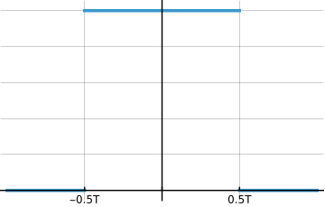

It's possible to generate nearly arbitrarily high frequency signals using a relatively slow transmitter by exploiting undersampling. In this post I will try to give an intuitive explanation of the mechanism, and try to find the optimum sample frequency to emit a given signal.
I found this fascinating video, which showcases the emission of LORA signals using nothing more than a GPIO on a microcontroller. Of course, the microcontroller cannot directly synthesize the radio frequency signal (at around 900MHz), so instead high harmonics of the GPIO square wave output are used. The mechanism to actually synthesize the signal is remarkable: sample the signal you want to emit at your desired GPIO frequency, and use that sampled data to drive your pin.
As a prerequisite for this article, you will need to know to have some familiarity with the Fourier transform and convolutions. Nonetheless, I've tried to make the article as intuitive as possible, of course nearly fully disregarding mathematical rigor.
Sampling our signal
We will consider a really simple signal \( g(t) = \cos (2 π f_0 t) = \frac{1}{2} e^{2 π f_0 t i} + \frac{1}{2} e^{-2 π f_0 t i} \), which is the signal we want to emit from our device. An ideal sampling device would capture infinitely thin slices of the signal. Such slices have a vanishingly small quantity of energy, so the sampler needs greater and greater gain as we thin the slice. The mathematical symbol to represent such behavior is the Dirac delta \(δ\), which allows us to write the sampled signal as:
\[ g_s(t) = g(t) \sum_{n=-∞}^{∞} δ(t - n T) \]
Where \( T \) is the time between each sample being taken.
If we take the Fourier transform 1 of \( g(t) \) we find its spectrum \( G(ω) \), which also uses the Dirac delta:
\[ G(f) = \frac{1}{2} δ(f - f_0) + \frac{1}{2} δ(f + f_0) \]
The spectrum of the sampled signal
To compute the spectrum of the sampled signal, we can apply the convolution theorem. It states that the Fourier transform of the product of two functions is the convolution of their respective Fourier transforms (the converse is also true). We can obtain the Fourier transform of the "sampling function" (Dirac comb) and find it to be:
\[ \frac{1}{T} \sum_{n=-∞}^{∞} δ\left(f - \frac{n}{T}\right) \]
Now, we need to convolve the previous expression with \(G(ω)\). The convolution of a Dirac delta with another obeys the following law:
\[ δ(t - a) ⊛ δ(t - b) = δ((a + b) - t) \]
Thus we may write the spectrum of the sampled signal by applying the previous "law" linearly:
\[ G_s(f) = \frac{1}{2} \sum_{n=-∞}^{∞} δ\left(\left(\frac{n}{T} ± f_0\right) - f \right) \]
The following graph allows you to play around with the values and get a feel for the results. Note that the vertical scale of the graph represents the intensity of each term of the Fourier series in a logarithmic scale 2, and the horizontal scale is the frequency in Hz. The shaded area represents the Nyquist area, where the signal frequency is less than half the sampling frequency.
Consider \( f_0 \) = Hz and \( \frac{1}{T} = f_s \) = Hz. We obtain the spectrum:
(Enable zero-order hold in graph).
Sure enough, our original frequency is one of the components of the sampled signal. Note that if you reduce the signal frequency to within the Nyquist zone (grey area), the signal is perfectly reproduced within that area, without any spurious signal appearing.
The zero-order hold
Our ideal sampling process can be easily achieved within a computer by sampling a mathematical representation of a signal. But, outputting such a signal from a microcontroller would prove impossible, as it would require generating infinitely fast pulses. A more realistic approximation is to state that we may generate a square-wave. For simplicity, we will assume that its edges are instantaneous. Mathematically, this is referred to as a zero-order hold. Feel free to play around with the button in the graph to get a feel for how it works.
We can represent such a device as a convolution in the time domain between our sampled signal and the "boxcar" function with the sample period as width:

Applying the convolution theorem, we can obtain the spectrum of the resulting signal as the product of the spectrum of the original samples, and of the spectrum of the "boxcar" function, which is known as the "sinc" function:
\[ \frac{1}{π f} \sin \left(π \frac{f}{f_s} \right) \]
Due to the denominator, the bigger \( f \) is, the more attenuation we have. Furthermore, if \( f \) is badly placed it may be completely attenuated. Note that, even with a properly sampled signal (i.e. sampling frequency more than twice the signal frequency), some attenuation will take place for signals relatively close to the Nyquist frequency (half the sampling frequency). This is commonly known as "sinc roll-off".
You can use the following button to enable this attenuation in the interactive graph:
(Enable zero-order hold in graph). Go to graph
Each of the areas between two zeros is referred to as a "Nyquist zone". The zeroes can be found by solving \( π \frac{f}{f_s} = kπ \), which gives \( f = k f_s \), for \( k ≥ 1 \).
A quick side-note: Extrema of the sinc function
If we compute the derivative of said function we can find the frequencies at which it's of maximum amplitude, which requires solving (for non-zero \( f \)):
\[ \tan \left( \frac{π f}{f_s} \right) = \frac{π f}{f_s} \]
Remarkably, this equation has no closed form solution. Nonetheless, we can infer some properties about its solutions, and cook up a quick numerical method to find them 3. First of all, note that it's intuitive to see that infinite solutions exist, as surely the line in the right hand side intersects the tangent (whose image spans all reals over and over) infinitely many times.
Afterwards, note that taking the arc-tangent:
\[ \frac{π f}{f_s} = \arctan \left( \frac{π f}{f_s} \right) + 2k π ⟹ f = \frac{f_s}{π} \left( \arctan \left( \frac{π f}{f_s} \right) + 2k π \right) \]
Except for small \( k \), the term in the parenthesis is dominated by \( 2k π \). Furthermore, only one solution is located in each Nyquist zone, because the arc-tangent approaches \( \frac{π}{2} \) as its argument grows, and is positive. In fact, for big enough \( f \) (and thus \( k \) ), the solution is located extremely close to \( \frac{4k + 1}{2} f_s \), at the center of each Nyquist zone.
Thus, we propose a numerical method where start our iterative solution with \( f[0] = 2k f_s \), i.e. one of the zeroes of the sinc function, and iterate by the following recurrence relation:
\[ f[n] = \frac{f_s}{π} \left( \arctan \left(\frac{π f[n - 1]}{f_s} \right) + 2 k π \right) \]
Intuitively, this converges because \( f[n - 1] \) always underestimates the actual solution (as the arctangent is monotonic), and \(f [n] \) is also monotonically increasing with \( n \). A more detailed proof could be given, as this argument doesn't really show that the converged value is the actual solution, but goes outside the intent of the blog post. 5 iterations of this method are good enough for pretty much all applications.
Assuming that the maxima are located at the center of the Nyquist zones supposes a maximum error of around 0.5%, and thus for our application we may as well just assume that they are coincident.
Optimum sampling frequency
We will consider the problem of finding the optimum sampling frequency to best represent \( g(t) \) with our sample-zero-order-hold system, given an upper limit on \( f_s \). This limit is usually imposed by the clock of the microcontroller's GPIO (General Purpose Input Output). By "best represent", we mean:
- Generating an output signal that contains as much power as possible in its spectrum at frequency \( f_0 \)
- Having the least possible cluttering signals around \( f_0 \) so we can use a wide band-pass filter to isolate our desired signal
Of course, if our \( f_s \) is large enough that it satisfies the Nyquist criterion, we can just output the signal "as-is", and apply a low-pass filter to eliminate higher order harmonics. We are instead interested in the case where \( f_s \) is relatively small.
For emitting symmetric signals
If you play around with the graph, you will find that for signals "dancing" around a multiple of half \( f_s \), we get a symmetric signal of near-maximum gain, and furthest away from the other undesired harmonics. The maximum gain can be explaind intuitively: at a signal of half the sample-frequency, the output signal switches the most, and thus reasonably it contains the most energy at high frequencies 4.
Such signals are common in communications. For example, they could be used for carrier-supressed AM transmissions, as this type of signal is symmetric. Emitting a AM signal with carrier would be as simple as adding another signal at a multiple of half our sampling frequency.
Thus, if we want to emit a signal that's symmetric around a given \( f_c \), we need to set the sampling frequency to \( \frac{2}{(2m - 1)} f_0 \) where \( m \) is as big as needed.
Consider the center frequency of our symmetric signal to be \( f_c \) = Hz and \( m \) = , the sample rate must be set to \( f_s \) = Hz. Go to graph
For emitting non-symmetric signals
Non-symmetric signals are a bit more tricky to generate using this method. A good example of such signals are chirp-spread-spectrum methods, such as LORA, Frequency-Shift-Keying (FSK), and many other protocols used for digital data transfer.
By playing around with the graph for a bit, you may also find that signals at odd multiples of a quarter the sampling frequency are optimally far away from the other harmonics. For example, if you set \( f_0 = 125 \)Hz and \( f_s = 100 \)Hz, and move around \( f_0 \), you will find this frequency maximizes the separation between signals, which are evenly spaced a distance of \( \frac{f_s}{2} \)Hz apart.
Thus, if we want to emit a signal that's asymmetric but centered around a given \( f_c \), we need to set the sampling frqeuency to \( \frac{4}{2m - 1} f_0 \) where \( m \) is as big as needed.
If you only care about having the highest bandwidth without interference from other harmonics, this is the ideal sampling frequency. You could theoretically increase gain by a bit by exploiting the off-center nature of sinc maxima, but this effect is fairly small and for practical applications may as well be ignored.
Consider the center frequency of our non-symmetric signal to be \( f_c \) = Hz and \( m \) = , the sample rate must be set to \( f_s \) = Hz. Go to graph
Further non-idealities
During the whole text, we have considered that we can output any power level, but in reality we will be limited to outputting either zero power or maximum power. In the next post I will try to derive the effect of such a "distortion" on our signal. Indeed, this quantization will imply the appearance of a lot of distortion in the output signal, but our fundamental frequency will remain. Finally, I will present a real-life experiment where we put to test all of these mathematics in a device, and try to emit some meaningful radio waves.
-
I'm using the unitary Fourier transform, which leads to neater expressions. ↩
-
Actually, the signals are divided by the would-be intensity of the "DC" signal of \( f = 0 \) before taking logarithms, such that the graph scale remains consistent. ↩
-
Adapted from leonbloy's post on Mathematics Stack Exchange. ↩
-
Switching the signal is where the "high-frequency" of our output comes to life, as such a fast transition can "excite" arbitrarily high frequency resonant systems. This is precisely why a sampled 0 frequency signal (a constant), after applying the zero-order hold, has absolutely no high frequency content: it has no transitions. ↩